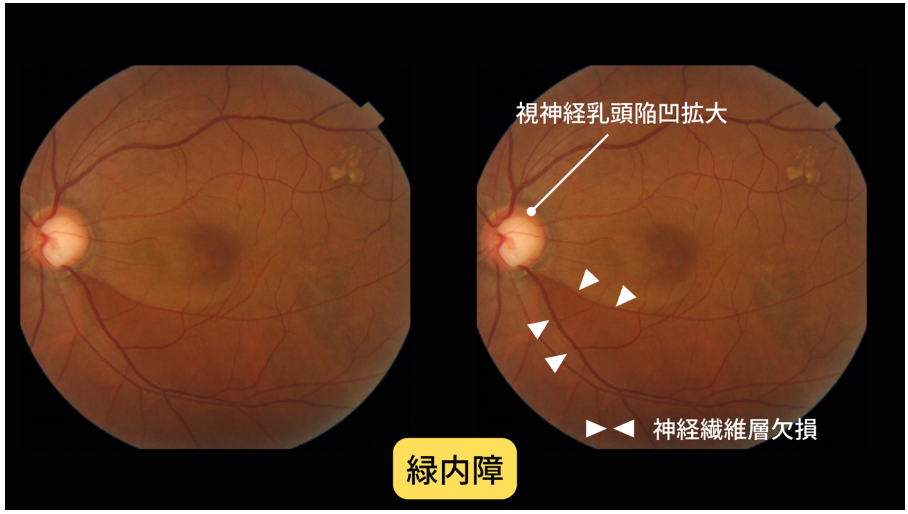

👁️ 緑内障理解度クイズ 👁️
患者・家族向け - 病気への理解を深めよう
👁️ 緑内障理解度クイズ
❌ 間違えた問題:
0問
🆕 未挑戦の問題:
17問
✅ 正解した問題:
0問
📊 全問題数:
17問
今日の3問: 間違い・未挑戦を優先出題
全問モード: 全17問を順番に出題
全問モード: 全17問を順番に出題
問題 1 / 17
正解: 0
問題 1
40歳以上の日本人で緑内障の患者さんの割合はどのくらいでしょうか？
約1%（100人に1人）
約2%（50人に1人）
約5%（20人に1人）
約10%（10人に1人）
解説：緑内障は非常に多い病気で、40歳以上では5%、つまり20人に1人もいます。60歳以上では10人に1人と言われています。
 視覚障害原因の統計：緑内障が40.7%で第1位
視覚障害原因の統計：緑内障が40.7%で第1位
 正常な眼底写真：比較のため
正常な眼底写真：比較のため
視覚障害原因の統計：緑内障が40.7%で第1位

緑内障の眼底写真：視神経乳頭陥凹拡大と神経繊維層欠損が見られる
正常な眼底写真：比較のため
大切なポイント：これほど多くの方が患っている病気ですが、早期発見・適切な治療により、ほとんどの方が生涯にわたって視力と視野を保つことができます。
問題 2
緑内障で最も大切な治療目標は何でしょうか？
視力を向上させること
視野を広げること
病気の進行を遅らせ、生涯視機能を保つこと
眼圧を正常値まで下げること
解説：緑内障は治る病気ではなく、治療は進行を遅らせて、生涯にわたり視機能を保つことが目的です。死んだ神経を元に戻すことはできないため、視野を広げることはできません。
理解しておきたいこと：早期発見・適切な治療により、進行を大幅に遅らせることができます。生涯、視野と視力を保てたなら治療は成功です。
問題 3
眼圧の正常値の範囲はどれでしょうか？
5～15mmHg
10～21mmHg
15～25mmHg
20～30mmHg
解説：眼圧の正常値は10～21mmHgですが、眼によって耐えられる眼圧が異なります。また、眼圧は1日の中でも4～5程度変動し、冬は高いことが多いです。
知っておきたいこと：昼に一度測ったぐらいでは、その眼の眼圧のことは分かりません。緑内障の治療で眼圧を下げて、進みが遅くなればその眼にとって良い眼圧になったといえます。
問題 4
緑内障の早期発見が難しい理由として最も適切なのはどれでしょうか？
検査技術が発達していないから
自覚症状がほとんどないから
医師の診断が困難だから
費用が高額だから
解説：緑内障は早期発見には眼科に行かないと分からないことが多く、診断されても早期や中期では自覚症状がないために、治療をやめてしまう方が多いのが問題です。
正常な眼底写真：緑内障と比較すると視神経乳頭の違いがわかる
緑内障の眼底写真：自覚症状がなくても眼底検査で異常がわかる
正常な眼底写真：緑内障と比較すると視神経乳頭の違いがわかる
重要なメッセージ：自覚症状がないのはまだ余裕があるということです。自覚がないうちに見つかった人は、早く見つかってラッキーだったと思ってください。
問題 5
開放隅角緑内障の基本的な治療方法は何でしょうか？
点眼薬による治療
レーザー治療
手術治療
内服薬による治療
解説：開放隅角緑内障は、眼圧を下げることしか治療の方法がありません。そのために、まずは点眼薬により治療をします。点眼を続けても進行するなら、手術で眼圧を下げることになります。
治療のポイント：ある程度眼圧を下げる目標を立てますが、効果は眼によって異なるため、追加で何剤か点眼薬を併用することも多いです。
問題 6
点眼治療で最も重要なことは何でしょうか？
1回に多く点眼すること
継続して続けること
複数の薬を同時に点眼すること
眼圧が下がったら中止すること
解説：点眼治療は、患者さんが自ら行う治療ですから、患者頼りになります。点眼を続けなければ、治療は成功しません。決して忘れず長く続けることが最も重要です。
点眼のコツ：1回に1滴、異なる薬は5分以上開けて点すことを守ってください。1回に1滴以上はだめです。入れば十分ですから点しすぎないようにお願いします。
問題 7
視野検査を受ける際に大切なことは何でしょうか？
できるだけ多くのボタンを押すこと
焦らず正直に検査を受けること
眼を積極的に動かすこと
見えない光も見えたと答えること
解説：視野検査は、そのときの患者さんの気持ちや体調がよく反映される検査です。落ち込んでいたり、緊張してドキドキして検査を受けるとうまくいきません。
 視野検査の結果例：黒い部分が視野欠損を示している
視野検査の結果例：黒い部分が視野欠損を示している
視野検査の結果例：黒い部分が視野欠損を示している
検査のコツ：視野検査は正常な方でも見えない光を提示したりして検査するので、焦らず正直に受けるようにお願いします。眼を動かすと検査結果が良く出てしまいます。
問題 8
緑内障と診断された時の心構えとして最も適切なのはどれでしょうか？
すぐに仕事を辞める準備をする
人生設計を大幅に変更する
早く見つかって運が良かったと思って定期通院する
失明は避けられないと諦める
解説：緑内障と診断されたら、早く見つかって運が良かったと思って、定期的に通院をしてください。仕事や生活を変える必要はありません。
大切な考え方：かなりの高眼圧や末期の方以外は、じっくり治療に専念し、仕事や生活パターンを変えず、あせらず過ごすことが重要です。
問題 9
緑内障で自覚症状が出ている場合、どのような状態でしょうか？
まだ初期段階で余裕がある
中心に視野欠損が出ていてピンチの状態
治療の必要がない軽度の状態
手術が必要な末期の状態
解説：霞んだり、文字を読み飛ばしたりといった自覚症状が出ている場合は、中心に視野欠損が出ています。この様な自覚症状が出ている場合はピンチです。
視野検査の結果例：中心付近まで欠損が進むと自覚症状が出る
視野検査の結果例：中心付近まで欠損が進むと自覚症状が出る
重要：緑内障の視野欠損は暗くなりません。霞んできてそのうち濃い明るい霧の中にいるように感じます。積極的に治療に参加して、何とか生涯、視野や視力を保てるようにしましょう。
問題 10
点眼薬の副作用として最も一般的なものは何でしょうか？
眼の充血
視力低下
眼圧上昇
頭痛
解説：目薬には必ず副作用があります。ほとんどに共通する副作用は充血ですが、たいていの方が受け入れられます。アレルギーがでたら中止です。
注意点：目薬で、喘息や息切れ、動悸、めまい、などの症状を起こすこともありますから、そのように感じたら主治医に相談をお願いします。
問題 11
初期の開放隅角緑内障で、眼圧が「18mmHg」の患者さんについて正しいのはどれでしょうか？
正常値なので治療は不要
その眼に合った適切な眼圧まで下げる必要がある
すぐに手術が必要
経過観察のみで十分
解説：眼圧が正常範囲内（10-21mmHg）でも、その眼にとって高すぎる場合があります。初期緑内障では、その患者さんの眼に適した「目標眼圧」まで下げることで、進行を防ぐことができます。これを「正常眼圧緑内障」と呼ぶこともあります。
問題 12
初期の開放隅角緑内障と診断された患者さんの理想的な通院間隔はどれでしょうか？
半年に1回
2-3ヶ月に1回
1年に1回
症状が出たときのみ
解説：初期緑内障では、治療効果の確認と病気の進行チェックのため、2-3ヶ月に1回の定期通院が推奨されます。眼圧測定、視野検査、眼底検査を定期的に行い、点眼効果を評価します。自覚症状がなくても継続通院が重要です。
問題 13
緑内障の診断で、OCT（眼底三次元画像解析）検査の目的として最も適切なのはどれでしょうか？
白内障の程度を調べる
眼圧を正確に測定する
視神経の厚みを詳しく調べる
角膜の状態を確認する
解説：OCT検査では、視神経線維層の厚みを数値で測定できます。初期緑内障では視野に異常が出る前に、すでに視神経が薄くなっていることがあります。この検査により、より早期の診断と経過観察が可能になります。
 OCT画像の比較：正常眼（左）と緑内障眼（右）。緑内障では赤色で示される神経繊維層の菲薄化が見られる
OCT画像の比較：正常眼（左）と緑内障眼（右）。緑内障では赤色で示される神経繊維層の菲薄化が見られる
 緑内障患者のOCT詳細データ：GChartで赤色（異常）の部分が多く、神経繊維層の菲薄化が数値で確認できる
緑内障患者のOCT詳細データ：GChartで赤色（異常）の部分が多く、神経繊維層の菲薄化が数値で確認できる
OCT画像の比較：正常眼（左）と緑内障眼（右）。緑内障では赤色で示される神経繊維層の菲薄化が見られる
緑内障患者のOCT詳細データ：GChartで赤色（異常）の部分が多く、神経繊維層の菲薄化が数値で確認できる
患者様への説明ポイント：「このカラーマップで緑色は正常範囲、黄色や赤色は神経繊維層が薄くなっている部分です」と説明すると、検査結果を視覚的に理解していただけます。
問題 14
適切な治療を受けている初期緑内障の患者さんの多くは、将来的にどうなるでしょうか？
ほぼ確実に失明する
必ず手術が必要になる
生涯にわたって視機能を保てる
数年で急激に悪化する
解説：初期で発見され、適切な治療を継続している緑内障患者さんの多くは、生涯にわたって日常生活に支障のない視機能を保つことができます。大切なのは、定期通院と点眼治療の継続です。過度に心配せず、医師と協力して治療を続けることが重要です。
問題 15
2種類の点眼薬が処方された場合、点眼の間隔はどのくらい空けるべきでしょうか？
すぐに続けて点眼してよい
5分以上間隔を空ける
1時間以上間隔を空ける
同じ時間に同時に点眼する
解説：複数の点眼薬を使用する場合は、5分以上間隔を空けて点眼します。連続して点眼すると、先に点眼した薬が後の薬で洗い流されてしまい、効果が減少する可能性があります。時間に余裕を持って点眼しましょう。
問題 16
緑内障の患者さんが視野検査を受ける理想的な頻度はどれでしょうか？
毎月1回
半年に1回
2年に1回
症状が悪化した時のみ
解説：初期緑内障では、視野検査は半年に1回程度の頻度で行うのが一般的です。病気の進行を早期に発見し、治療効果を評価するために定期的な検査が重要です。進行が速い場合や治療変更時にはより頻繁に行うこともあります。
視野検査の結果：定期的な検査で進行の有無を確認する
視野検査の結果：定期的な検査で進行の有無を確認する
問題 17
視野検査を初めて受ける患者さんへの事前説明として最も重要なのはどれでしょうか？
「痛くない検査なので心配いりません」
「集中力が必要で時間がかかりますが、正直に答えてください」
「全部の光が見えるよう頑張ってください」
「疲れたら途中で休憩できます」
解説：視野検査は集中力を要し、見えない光もある正常な検査であることを事前に説明することが重要です。「頑張って見ようとする」と正確な結果が得られません。リラックスして正直に反応することを伝えましょう。
視野検査の結果例：正確な結果を得るためにリラックスして検査を受けることが大切
視野検査の結果例：正確な結果を得るためにリラックスして検査を受けることが大切